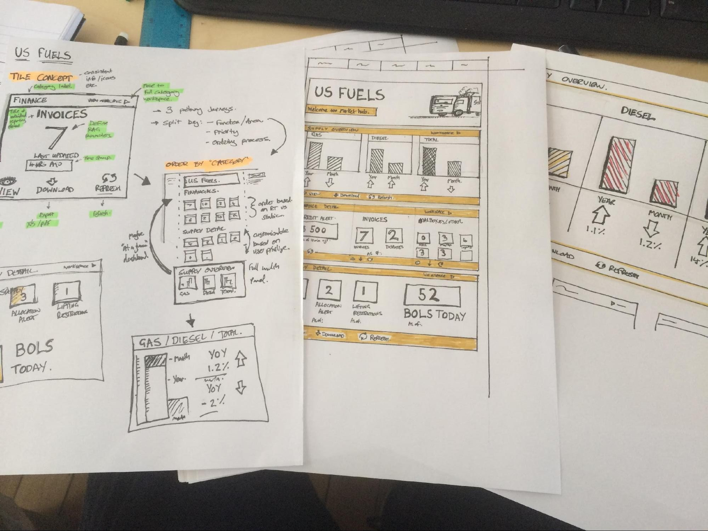

Introduction
So you've been told that you have to deliver Digital Technologies.
We often forget our students don't even have to touch anything digital, beeping, glowing, or electronic to learn digital technologies.
For my first magic trick today, I'm going to give two ideas for every DigiTech band, from Foundation to Year 10.
And just to make it more interesting, I'll do it blindfolded, with two hands tied behind my back, and for each band, I'll give an idea that doesn't use anything techy. That means something you can do with 🚫no iPad, 🚫nothing that beeps or lights up, and 🚫 no gosh-darn fancy-pants electricity.
"Computer science is no more about computers than astronomy is about telescopes." - Edsger Dijkstra
Foundation to Year 2
💻 With tech: BeeBots 🐝
Using: BeeBots (about $120, can be used in small groups)
The beauty of BeeBots is that they do almost nothing at all.
If you've ever tried to get a classroom full of 5-year-olds to follow a series of instructions on an iPad, you'll know how painful it can be to keep them engaged in a world of possibility.
BeeBots are bright yellow robots, specifically designed for young little kidlets. Almost indestructible, they only have 7 buttons on them so that students can program very simple instructions for their bee.
Get the lesson plan from Barefoot Computing
📝 Without tech: Reduce, reuse, recycle
Let's be real: 1-1 devices cost a bloody fortune. Even if your school can afford to have iPad for each student, failures are inevitable (just like in learning!).
The easiest way to do Digital Technologies without tech, is to realise that you are already doing Digital Technologies.
🐻 Bear with me for a minute, and check out these content descriptions.
|
"Collect, explore and sort data, and use digital systems to present the data creatively" (ACTDIP003)
|
"Sort and classify familiar objects and explain the basis for these classifications. Copy, continue and create patterns with objects and drawings" (ACMNA005)
|
Wanna know a secret? The one on the left is from Digital Technologies, and the one on the right is from Mathematics. They're not the same, but they're pretty darn close. There are a few of these hidden throughout the National Curriculum, ACARA Australian Curriculum, like super-secret Easter eggs. Watch out for the same things in other learning areas.
If you've covered the rest of the Australian Curriculum, then you've already started your Digital Technologies journey
That's why it's important to check the DigiTech curriculum to see what you've covered, and then just plug in the gaps.
Years 3 and 4
💻 With tech: LEGO Mindstorms 🤖
Using: LEGO Mindstorms EV3 (about $390 per kit, can be used in very small groups), typically with an iPad
I love that before students start to program their robots with EV3, they need to build them.
This means that even before you grab the batteries or charge the thing up, students are already:
- learning how to follow written visual instructions
- collaborating via the "why doesn't mine look like yours?", and "how did you do this bit?"
- problem-solving issues along the way, and building resilience in the process
In the programming itself, I've seen the LEGO EV3 robots used with Year 3, 4, 10 and even university-level students. There is a lot of scope to go up or down.
📝 Without tech: Unplugged 🔌
We're getting into CS Unplugged territory here -- a great resource!
CS Unplugged have loads of resources for this age group, like the kidbots unit plan. This is probably my favourite technique to teach computer science: get students to plan out an algorithm, then physically walk out that algorithm. You can also get the kids to give instructions for you, which makes for a very entertaining lesson
Years 5 and 6
💻 With tech: Scratch 😸
I have so much respect for the impact that Scratch has had on CS education. Even though I love programming, I know that written code is a major turn-off for young coders. It's confusing and fussy and blegh.
Luckily, there are ⛵-loads of resources around the place. Are you the kind of teacher that wants a structured eBook to get started? Then check out the Creative Computing eBook, which has tonnes of ideas and resources to structure a Scratch unit.
📝 Without tech: Binary numbers
CS Unplugged saves the day again! (Okay, okay! I promise this is the last time!)
The beauty about their classic binary numbers lesson plan is that it is just so versatile. I've used it with Year 11 students and we had a boatload of fun. Well, I had fun, and that's what counts, right? 🤷
Years 7 and 8
💻 With tech: BBC Microbit ($30 each)
BBC Microbit combines the drag-and-drop ease-of-use of Scratch with a microcontroller (tiny computer) that is packed with sensors. It's got 💡light, 🌏compass and 🌡temperature sensors, and has 🎮buttons, a 📺screen and heaps of cool other stuff.
It is so easy to set up and use compared to an Arduino. I love Arduino to bits as a programmer, but you can tear your hair out trying to troubleshoot an entire screaming classroom of wires-in-the-wrong-places and struggle to get anywhere.
Get the kids comfy with a Microbit first, then bust out the Arduino for the cluey coders in your class.
📝 Without tech: Group chat 💬
Acquire data from a range of sources and evaluate authenticity, accuracy and timeliness (ACTDIP025)
We know that modern tech brings advantages, but it also brings a huge variety of social issues. What better way to combat this, than with open group discussions with your students?
The eSafety website is funded by the Aussie government, and has tonnes of resources to help you out. In Year 7/8, there are lesson plans and worksheets for digital citizenship sexting and cyberbullying. All of these can be done even without a projector or IWB! While the worksheets are great, they also make a great stimulus for a class chat.
My Year 8 students reacted really well to the Tagged eSafety unit. I think they even surprised themselves with a maturity that they never knew they had!
Remember to use group norms, like in the Child Protection Curriculum (page 11).
Years 9 and 10
💻 With tech: Grok Learning NCSS Challenge ($20 per year, per student, or $30 per student for all-access)
The Grok Learning NCSS challenge is amazing 😍. I've used it with Year 9 to 12 students, and every single time it is an absolute godsend 😇🙏🙌.
What I like:
- It has enough scaffolding to support the challenges.
- It doesn't go all helicopter-mum and stop them making mistakes. Instead, it guides students back to the solution when they inevitably make an error.
- You can display the leaderboard during your lesson if you want to, and this competitive streak is great for both ends of the class. I know there are loads of counterarguments against leaderboards, but I've found that students at the bottom get a major wriggle-on when they actually realise that they need to put in the hard yards.
📝 Without tech: Planning computer programs 🤔

- Plan and manage projects using an iterative and collaborative approach, identifying risks and considering safety and sustainability (ACTDIP044)
- Design algorithms represented diagrammatically and in structured English and validate algorithms and programs through tracing and test cases (ACTDIP040)
Students can:
- Create a flowchart that a computer could use to solve a problem. There are heaps of examples of flowcharts that you can show to students, which I've found is the best way to demonstrate the ♢ diamonds for decisions and the ▭ rectangles for actions.
- Break a larger project down into small tasks, and assign each task to individual team members. They can estimate timeframes using a Gantt chart on paper.
- Draw sketches of what their program/game/project/website will look like.
Where to from here?
The Digital Technologies Hub has units, lesson plans, and links to heaps of resources.
The Computer Science MOOC from the University of Adelaide is a great PD that runs through more options for your year level.
I'll post an organised bunch of DigiTech links/resources in a future post, so sign up to the mailing list below to stay in the loop.
Was this article useful for you? Want to talk about it with your friends? Let them know about it!